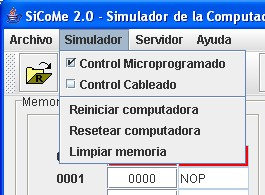
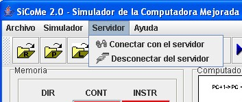
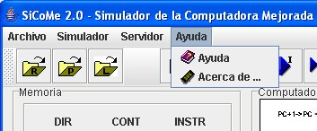

La barra de menú
La barra de menú es uno de los
componentes más importantes de la pantalla principal, por ello se merece una
especial atención. A continuación se describen los menús que componen la barra,
así como su cometido:
· Archivo. En este
menú, se encuentran las opciones de carga de ficheros de programa y de
repertorio, tanto ubicados en la máquina local como en el servidor (por
supuesto, se ha de estar conectado al servidor para disponer de dichos
archivos), además de la configuración de los parámetros del simulador y del
servidor. El control de ficheros de la cuenta en el servidor también está
disponible en este menú, a través de una opción para borrar los ficheros no
deseados. Por último se da la opción de salir del programa. Este menú se puede
ver gráficamente en la siguiente figura.

·
Simulador. Es el
menú que proporciona las opciones relacionadas con la simulación de la
computadora. Los controles de la ejecución se han colocado en una barra de
herramientas que se comentará más adelante. En este menú se encuentran dos
cajas de selección con las opciones del controlador que queremos utilizar: Microprogramado o Cableado. Por defecto viene
seleccionado el controlador Microprogramado. Para
poder ver los elementos del controlador que esté seleccionado sólo debemos
pulsar la opción correspondiente al mismo. En este mismo menú podemos encontrar
las opciones de reiniciar, cuya
función es la de limpiar todos los registros (GPR, ACC, OPR, SP, F y CMAR) a
excepción del PC que lo iniciará al valor de la primera instrucción del
programa cargado; resetear, que reiniciarán
la computadora al estado inicial del programa SiCoMe,
limpiando inclusive el registro PC y el contenido de la memoria; y limpiar memoria, cuya función es la de
limpiar sólo la memoria.

·
Servidor. En el menú
Servidor se encuentran únicamente las opciones de conexión y desconexión del
servidor de prácticas. Este menú se puede ver gráficamente en la siguiente
figura.

·
Ayuda. A
través de este menú se accede a la ayuda del simulador, además de a la pantalla
de créditos. Este menú se puede ver gráficamente en la siguiente figura.
